1. Complexity 纸雕足球
A premium handcrafted layered paper-cut illustration of a football team celebrating a championship victory inside a packed stadium.

非官方合集 OpenAI · 2026-11-04 38 案例
官方案例 + 可核实 X 社区原帖（不编造提示词）。完整文档见仓库 README。
OpenAI Images 2.6 于 2026-11-04 发布；API 型号为 gpt-image-2.6-flare 与 gpt-image-2.6-sunburst。官方称速度约提升 50%，并新增原生 GIF、SVG、markup 标注编辑与 complexity 参数。
A premium handcrafted layered paper-cut illustration of a football team celebrating a championship victory inside a packed stadium.

A little monkey in an olive-green hooded coat stands in a snowy pine forest at dusk...
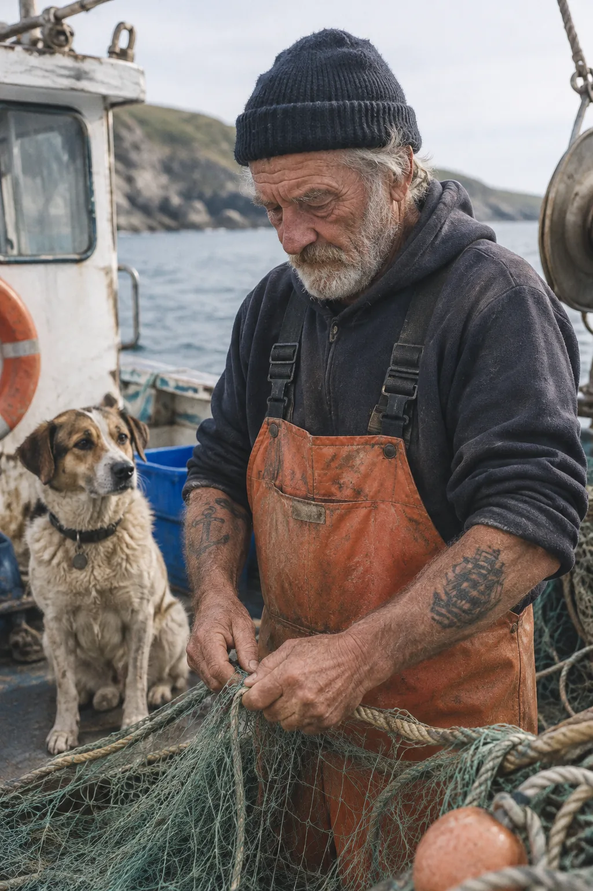

Create a photorealistic candid photograph of an elderly sailor...
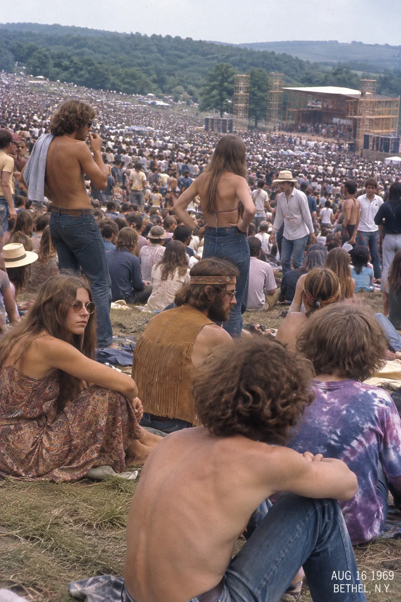
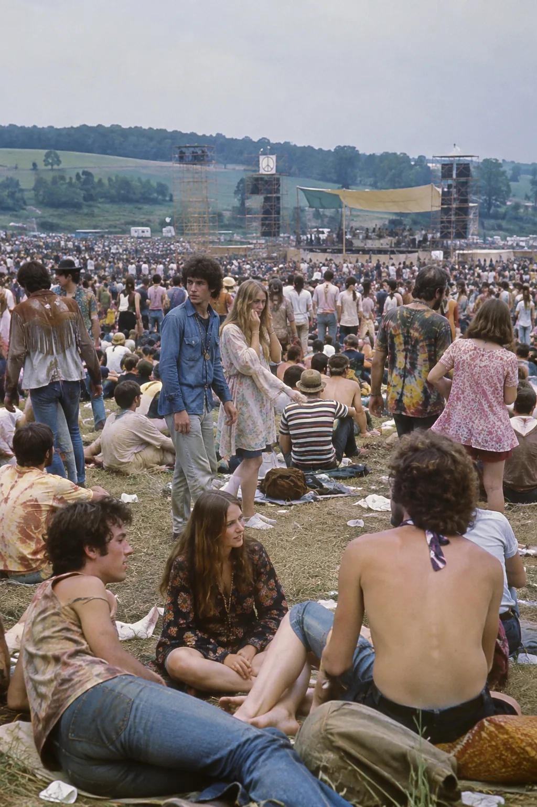
Create a realistic outdoor crowd scene in Bethel, New York on August 16, 1969. Photorealistic, period-accurate clothing, staging, and environment.

Translate the text in the infographic to Spanish. Do not change any other aspect of the image.
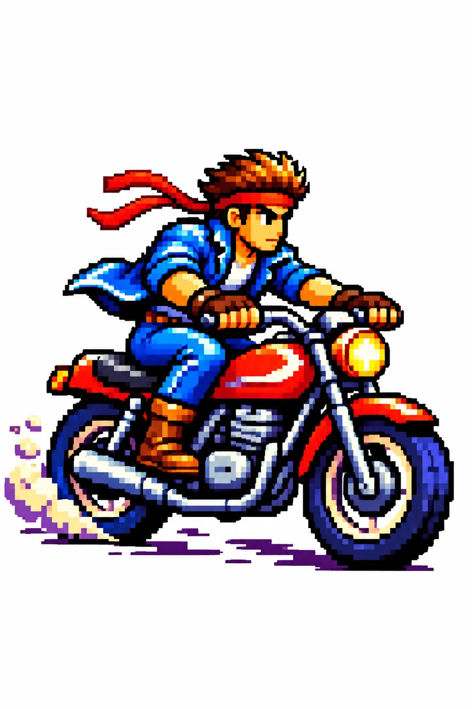
Use the same style from the input image and generate a man riding a motorcycle on a white background.

Edit the image to dress the woman using the provided clothing images. Do not change her face...
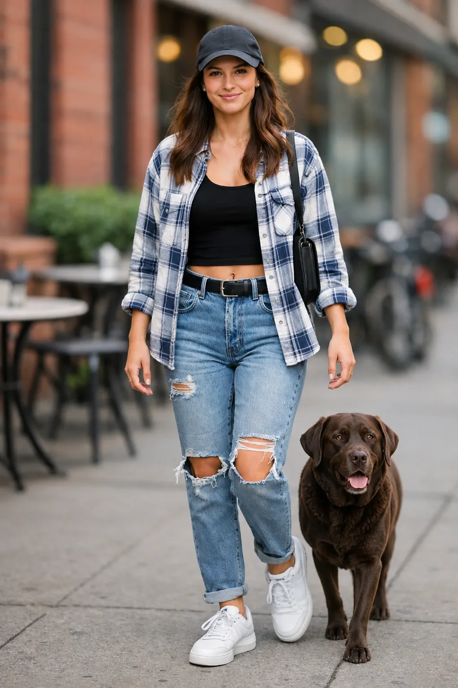

Place the dog from the second image into the setting of image 1, right next to the woman...
Turn this drawing into a photorealistic image. Preserve the exact layout, proportions, and perspective.

Remove the flower from man's hand. Do not change anything else.
Generate a highly realistic action scene where this person is running away from a large, realistic brown bear...
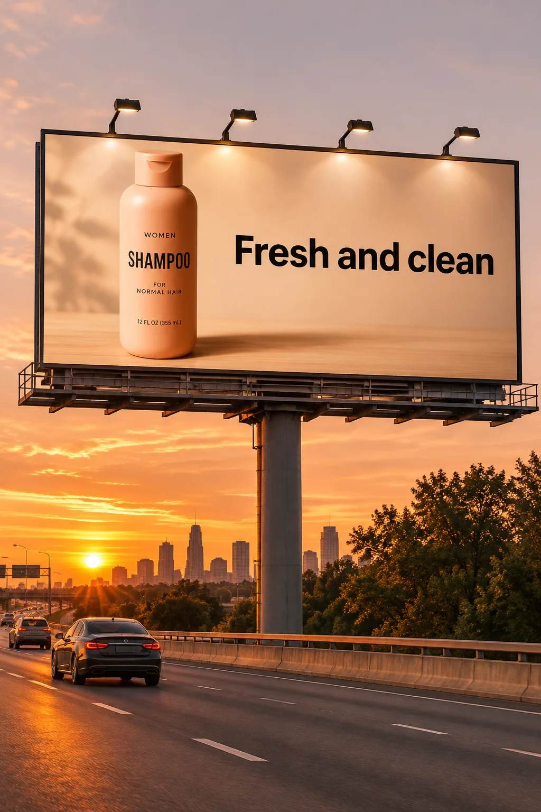
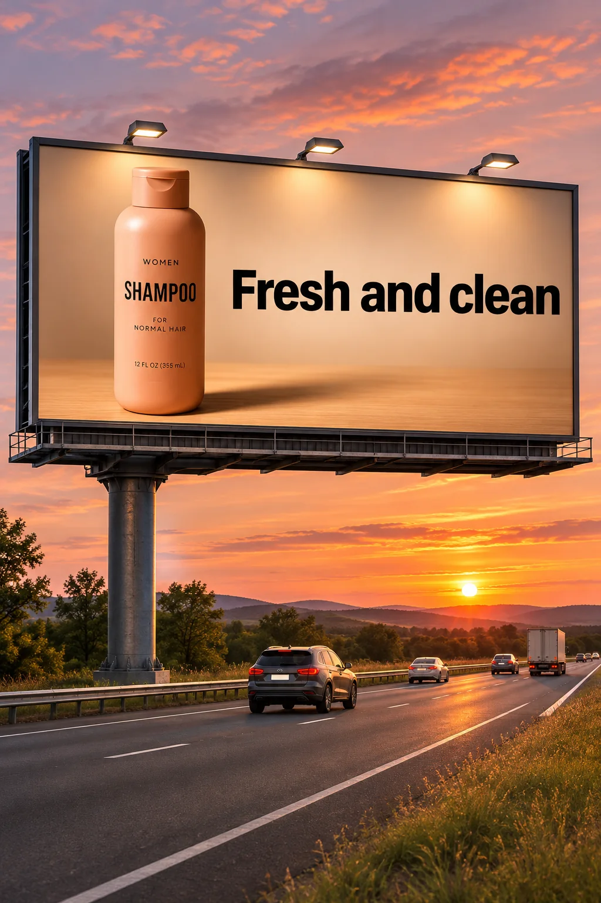
Billboard text (EXACT): "Fresh and clean"
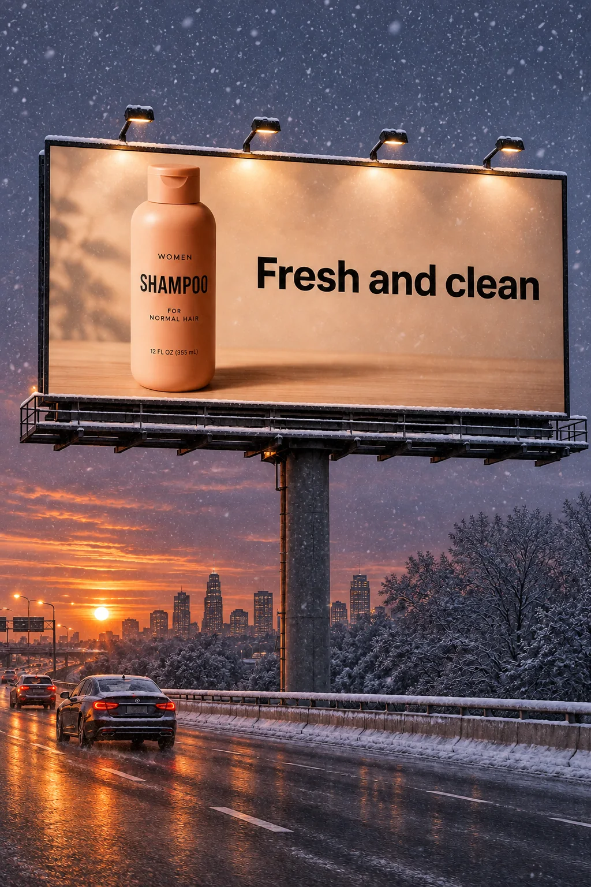
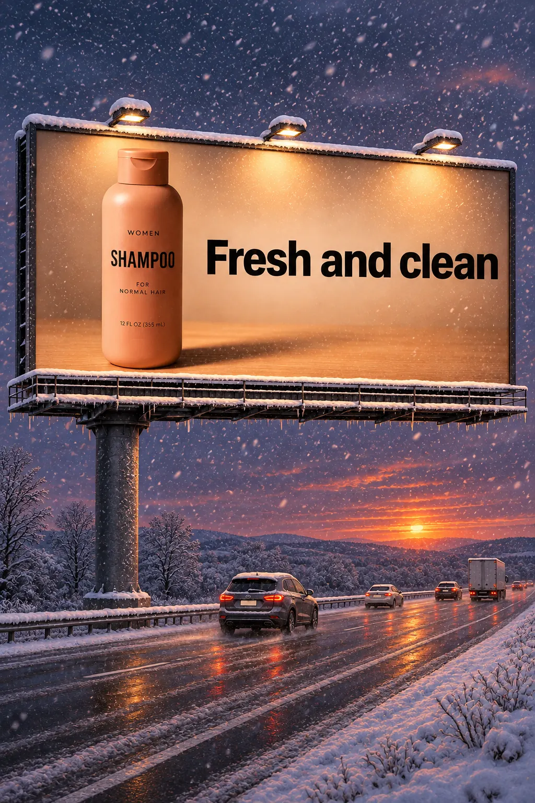
Make it look like a winter evening with snowfall.
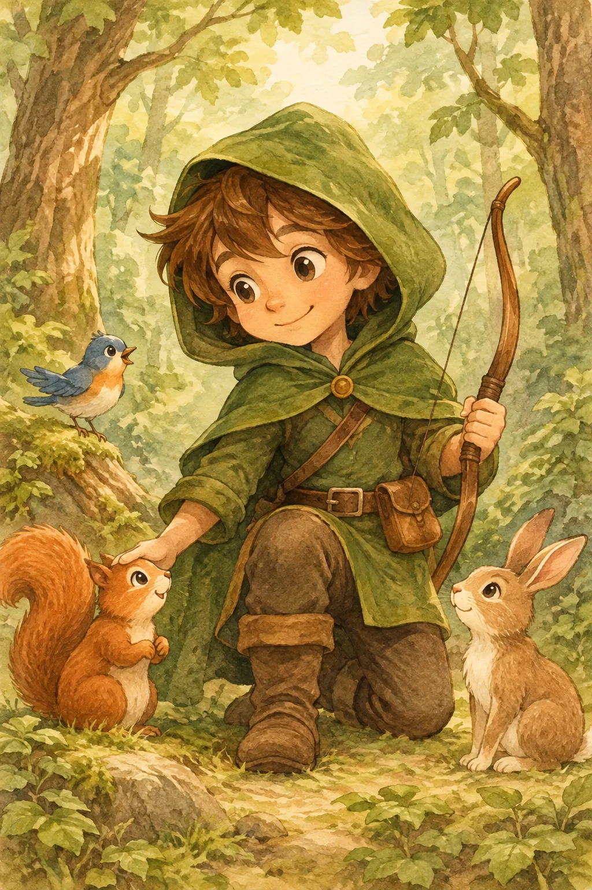

Create a children’s book illustration introducing a main character...
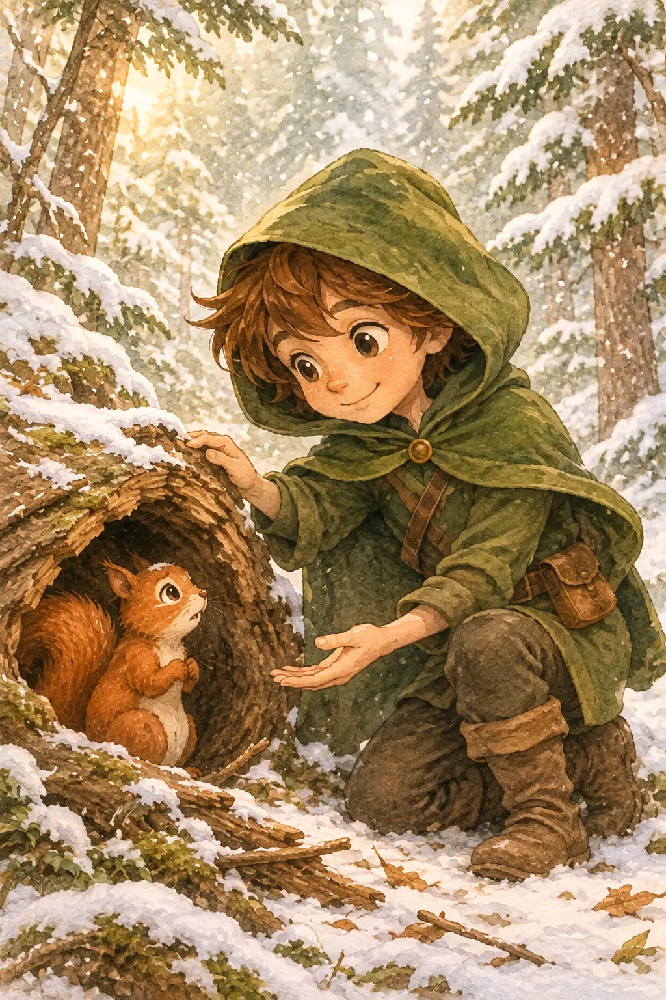

Continue the children’s book story using the same character...
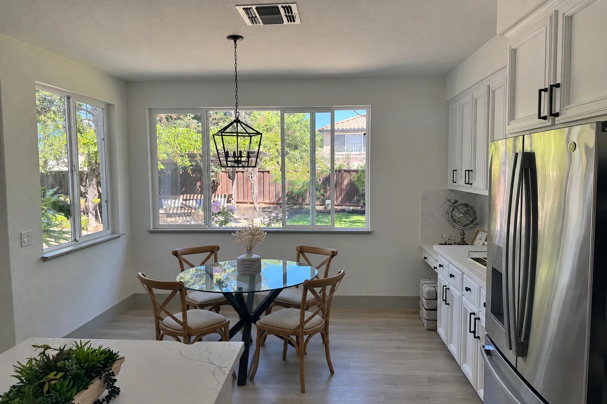
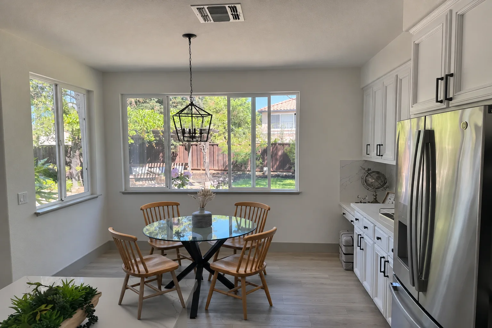
In this room photo, replace ONLY the white chairs with chairs made of wood.
另有 OpenArt 精灵表提示词全文、markup 花瓶、UI、幻灯片等，见 GitHub README 案例 4–15、29。
官方优先。下列为社区常用渠道备忘，非广告；可用性自查。
| 渠道类型 | 访问网址 | 适用场景 |
|---|---|---|
| GPT 国内高速镜像站 | https://trygpt.asia/list/#/home | 网页端免梯对话、轻量体验 |
| MomoAI 包月套餐 | https://momoai.asia/home | 按月订阅持续使用 |
| 全模型 API 聚合站 | https://tryallapi.com/ | 开发者调用、多模型接入 |
| 官方代充通道 | https://chongzhi.trygpt.asia/ | 海外支付门槛、官方账户直充 |
| Trymodel 多模型聊天 | https://trymodel.chat/ | 同页体验不同 AI 对话 |
tryallapi 可选注册补充链 https://tryallapi.com/?aff=5A6A（非必需）。
curl -X POST "https://api.openai.com/v1/images/generations" \
-H "Authorization: Bearer $OPENAI_API_KEY" \
-H "Content-Type: application/json" \
-d '{"model":"gpt-image-2.6-sunburst","prompt":"A minimalist ceramic mug on limestone","quality":"medium","size":"1024x1024","output_format":"png"}'
完整参数与接入：README.md
以下镜像自 X 原帖；提示词以原帖为准，未公开则标明。
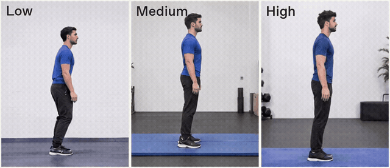